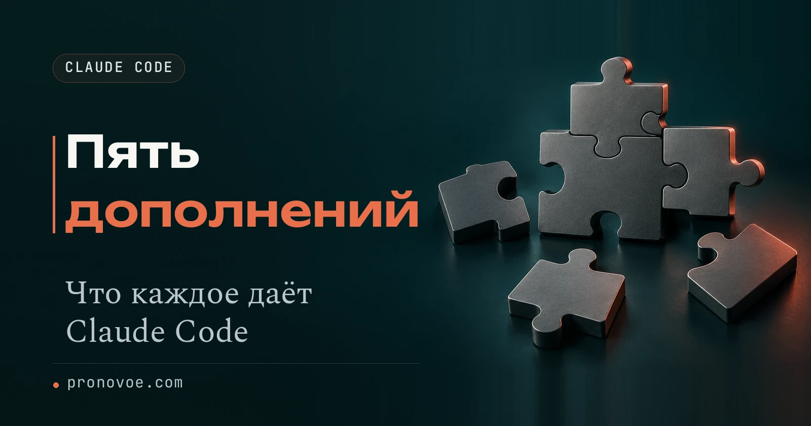
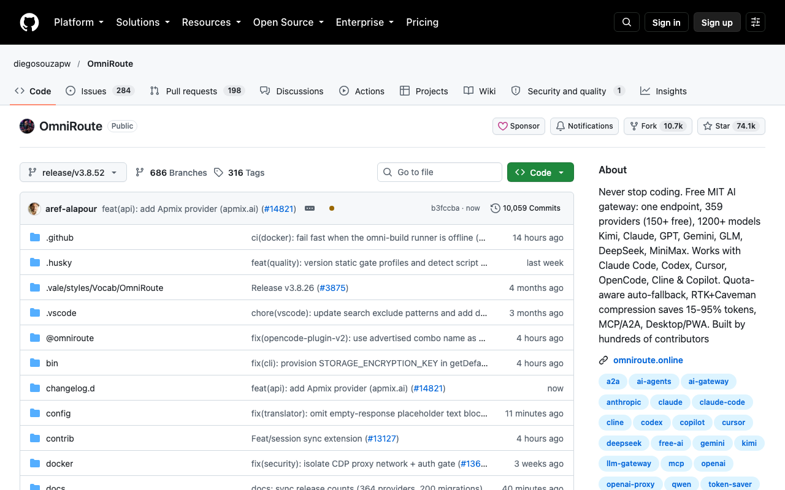
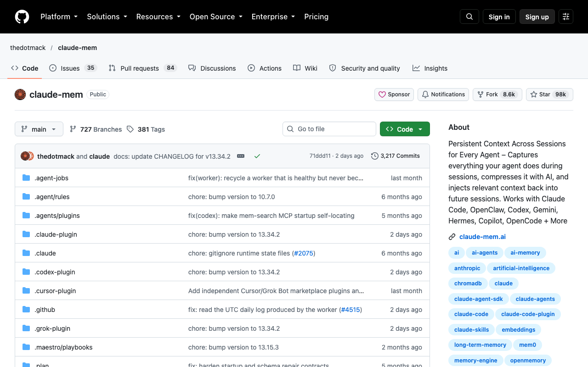
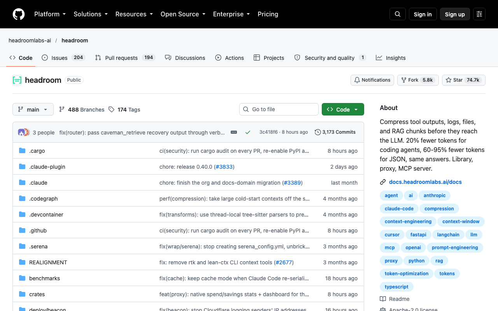
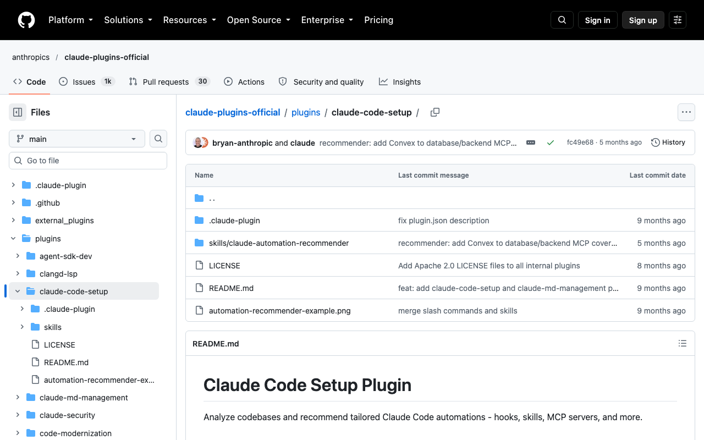
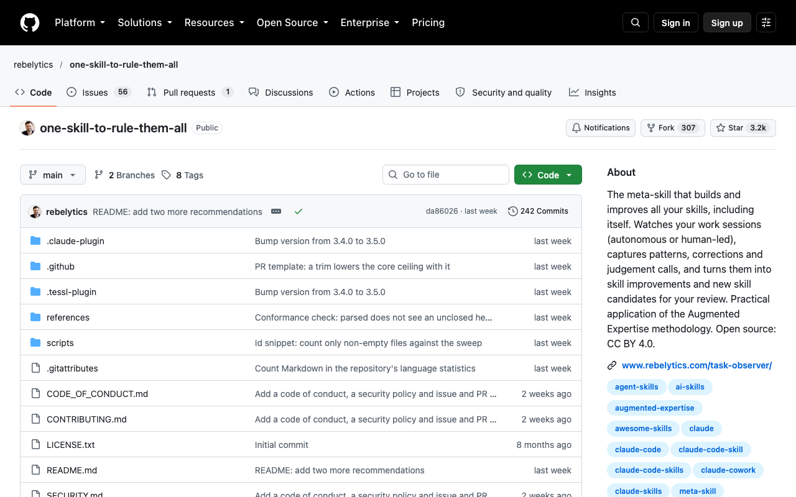

CLAUDE CODE · ПЯТЬ ИНСТРУМЕНТОВ

Пять дополнений для Claude Code: что каждое решает
Средний уровень
После каждой правки ты снова открываешь сайт руками, ищешь свежую команду в документации и боишься пропустить дыру перед запуском. Пять дополнений забирают по одной такой ручной работе. Но название в списке ещё не доказывает установку: для каждого дополнения ниже есть первый результат и отдельная команда проверки
Содержание статьи
Одна ручная работа за раз
С чего начать
Поставь сначала то дополнение, которое закрывает сегодняшнюю помеху. Для команд ниже нужен локальный Claude Code в папке проекта. Playwright требует Node.js 20+, Context7 - Node.js 22.13+
| Что делаешь руками | Что подключить | Что изменится |
|---|---|---|
| Кликаешь сайт после каждой правки | Playwright CLI | Агент открывает страницу, нажимает элементы и сохраняет снимок |
| Заходишь в панель базы ради таблиц | Supabase MCP | Claude читает схему и выполняет разрешённые действия |
| Проверяешь проект на уязвимости | Strix | Получаешь отчёт с шагами воспроизведения и уровнем опасности |
| Собираешь стиль сайта вручную | Skill UI | В проекте появляется дизайн-система и кадры страницы |
| Ищешь актуальный синтаксис библиотек | Context7 | Claude получает свежую документацию из источника |
Шаг 1
Playwright: сайт проверяет себя сам
Когда кнопки приходится нажимать после каждой правки, установи браузерный CLI и его скилл в текущий проект
Установка и первый результат
В терминале выполни
npm install -g @playwright/cli@latest playwright-cli install --skillsОткрой тестовую страницу и сделай снимок
playwright-cli open https://example.com playwright-cli screenshot playwright-cli close
Что увидишь: после открытия появятся адрес, заголовок и путь к снимку структуры в .playwright-cli, а команда screenshot положит туда изображение
Скилл должен лежать в .claude/skills/playwright-cli текущего проекта. Если Claude Code открыт в другой папке, он эту инструкцию не увидит
Источник на 18.10.2026: официальная инструкция Playwright CLI для coding agents
Шаг 2
Supabase MCP: база данных из разговора
Если приложение хранит пользователей, заказы или записи, MCP даёт Claude Code доступ к одному указанному проекту Supabase без ручного перехода между окнами
Подключение и проверка
Открой Settings → General в Supabase, скопируй Reference ID и подставь вместо <ID>. Затем добавь подключение только в настройки текущей папки Claude Code
claude mcp add --scope project --transport http supabase "https://mcp.supabase.com/mcp?project_ref=<ID>&read_only=true&features=docs,database,development"Запусти Claude Code из этой папки, открой /mcp, выбери Supabase и пройди вход в браузере
Попроси показать список таблиц, ничего не создавая
Что увидишь: команда добавит сервер в .mcp.json, а после входа статус сменится на Connected
Источник на 18.10.2026: официальная документация Supabase MCP
Шаг 3
Strix: отчёт о дырах до публикации
Когда проект уже принимает данные или деньги, обычной проверки интерфейса мало. Strix запускает агентов безопасности в Docker-песочнице и сохраняет найденные уязвимости отдельными файлами
Установка и безопасный первый запуск
Установи текущую CLI по официальной строке
curl -sSL https://strix.ai/install | bashЗадай модель и ключ в переменных окружения по инструкции Strix. Ключ считай паролем и не сохраняй в файлах проекта
Запусти короткую проверку чистой копии проекта. Параметр --max-budget 10 ограничивает расходы модели десятью долларами
strix -n -t ./ --scan-mode quick --max-budget 10
Что увидишь: отчёт penetration_test_report.md, JSON и SARIF появятся внутри strix_runs/. Открой strix_runs/<run>/run.json: код 0 не доказывает отсутствия дыр, если проверка остановилась по бюджету или покрыла только часть проекта
Источник на 18.10.2026: официальный репозиторий Strix
Шаг 4
Skill UI: оформление сайта превращается в инструкции
Если нравится чужая система цвета, шрифтов и отступов, Skill UI делает снимки страницы и записывает найденные правила в папку, которую прочитает агент
Снять стиль и проверить файлы
В папке проекта выполни
npx -y skillui@latest --url https://адрес-сайта --mode ultra --screens 3 --out ./outЕсли команда пишет, что Playwright не установлен, выполни npm install playwright, затем npx playwright install chromium и повтори запуск
Открой созданную папку в out и проверь DESIGN.md, SKILL.md и папку screens
Что увидишь: в папке out появятся правила цветов и шрифтов, повторяющиеся блоки и кадры страницы
Источник на 18.10.2026: репозиторий пакета Skill UI
Шаг 5
Context7: свежая документация вместо догадок
Последняя помеха появляется тише остальных: команда выглядит правдоподобно, но относится к старой версии библиотеки. Context7 подставляет документацию из текущего источника прямо в задачу
Подключение и первый запрос
Запусти официальный мастер настройки
npx ctx7 setup --claudeВыбери MCP или режим CLI со скиллом, пройди вход по ссылке и дождись записи настройки
Попроси актуальный пример для главной библиотеки проекта и добавь слова use context7
Что увидишь: ответ с актуальным синтаксисом и ссылками на документацию проекта вместо команды из памяти модели
Источник на 18.10.2026: официальная инструкция Context7 для Claude Code
До первой большой задачи
Проверь, что все пять на месте
| Дополнение | Проверка | Исправный результат |
|---|---|---|
| Playwright | playwright-cli --version | Номер версии |
| Supabase MCP | claude mcp list | Supabase со статусом Connected |
| Strix | strix --version, затем docker info | Номер версии Strix и успешный ответ Docker |
| Skill UI | npx -y skillui@latest --version | Номер версии |
| Context7 | MCP: claude mcp list CLI: файл ~/.claude/skills/find-docs/SKILL.md, затем ctx7 library react и ctx7 docs <ID> "useEffect cleanup" | MCP подключён либо CLI возвращает библиотеку и документацию |
Сообщение на экране важнее догадки
Что ломается и что делать
| Что видно | Что это значит | Что сделать |
|---|---|---|
| command not found: playwright-cli | Глобальная команда не попала в текущую оболочку | Проверь Node.js 20+, открой новое окно терминала и повтори версию |
| Supabase Pending approval | MCP добавлен, но вход ещё не подтверждён | Открой /mcp, выбери Supabase и пройди вход |
| Strix не стартует | Docker выключен, нет ключа модели или неверна цель | Запусти Docker, проверь переменные и используй чистую сохранённую копию проекта без незакоммиченных файлов |
| Skill UI пропустил computed styles | В проекте нет Playwright или Chromium | Выполни npm install playwright и npx playwright install chromium |
| Context7 не появляется в MCP | Выбран режим CLI со скиллом либо настройка не завершилась | Проверь выбранный режим и повтори npx ctx7 setup --claude |
Первый общий прогон
Запрос для Claude Code после установки
Открой Claude Code в папке проекта, замени адрес сайта и вставь запрос целиком
Проверь пять дополнений в этом проекте: playwright-cli, Supabase MCP, Strix, Skill UI и Context7. По каждому напиши: доступен или нет и чем это подтверждено
Затем:
1. Через playwright-cli открой https://адрес-сайта и проверь главные кнопки
2. Через Supabase покажи список таблиц, но ничего не создавай и не меняй
3. Через Context7 возьми свежую документацию по главной библиотеке проекта
4. Составь команду Skill UI для этого адреса, но сначала покажи, какие файлы появятся
5. Составь команду Strix для чистой копии проекта, объясни область и бюджет, но не запускай без моего подтверждения
В конце дай пять строк: дополнение, что уже проверено, что предлагаешь следующимХороший ответ сначала покажет пять доказательств установки. Действия, которые меняют данные или запускают проверку безопасности, останутся на подтверждении
Один экран на новый проект
Памятка пяти дополнений
- Playwright: установить скилл, открыть страницу и сохранить screenshot
- Supabase MCP: указать project_ref, включить read-only и пройти вход через /mcp
- Strix: запускать на разрешённой цели и чистом checkout, с Docker и ограниченным бюджетом, затем читать run.json
- Skill UI: снять страницу в out, проверить DESIGN.md, SKILL.md и кадры
- Context7: выполнить npx ctx7 setup --claude и проверить выбранный режим реальной командой
До установки всех пяти
Частые вопросы
Обязательно ставить все пять?
Нет. Начни с ручной работы, которую повторяешь сегодня. База и проверка безопасности нужны проекту позже, чем браузерная проверка или свежая документация
Где взять project_ref для Supabase?
Открой нужный проект, затем Settings → General и скопируй Reference ID. Он ограничит MCP одним проектом организации
Что означает бюджет Strix в 10 долларов?
Это верхний предел расходов модели на один запуск. Если бюджет закончился раньше, код 0 не доказывает, что весь проект проверен
Можно ли запускать Strix на чужом сайте?
Только с письменным разрешением владельца. Инструмент имитирует действия атакующего, поэтому обычной публичной ссылки недостаточно
Как проверить Context7 в режиме CLI?
Убедись, что создан скилл find-docs, затем получи ID через ctx7 library и запроси документацию через ctx7 docs
Если болит другое
Ещё пять вариантов из прежней подборки
Если в первой пятёрке нет твоей помехи, проверь ещё пять инструментов: для лимитов моделей, памяти между разговорами, длинных отчётов, подбора настроек и повторяющихся исправлений. Выбери один под текущую задачу, ставить все десять сразу не нужно
Дополнения для Claude Code: OmniRoute при исчерпании лимита
Задача остановилась на середине: Claude Code пишет, что лимит кончился. Без другого подключения остаётся ждать обновления

Здесь выручает OmniRoute. Он ставится на твой компьютер и работает посредником между Claude Code и нейросетями, такого посредника называют шлюзом. Запросы идут через него, а он решает, какая модель (вариант нейросети) ответит
Свежая установка может не иметь ни одной цели без ключа. Сначала подключи хотя бы одного провайдера, условия и лимиты которого тебе подходят
В режиме auto OmniRoute ранжирует доступные подключения динамически. Порядок с приоритетом подписки и более дешёвых моделей относится к стратегии auto/thrifty. Если нужна гарантированная модель, выбери или закрепи её явно
Это похоже на диспетчера такси: ты вызываешь машину, а какая из свободных приедет, решает диспетчер
Как начать:
-
Открой терминал, установи OmniRoute глобально и запусти его
npm install -g omniroute omniroute -
В браузере открой http://localhost:20128
-
В разделе Providers подключи сервис со своим ключом или подпиской и проверь, что он доступен
-
Если подключаешь Claude Code вручную, скопируй ключ из раздела Endpoints: это локальный ключ OmniRoute
-
Для быстрого запуска введи в терминале
omniroute launchКоманда откроет Claude Code и передаст ему нужный адрес и локальный ключ
Результат: Claude Code начнёт отправлять запросы через OmniRoute к подключённой модели
Шаги подключения есть в инструкции проекта OmniRoute, запуск Claude Code описан в инструкции того же проекта для Claude Code
claude-mem: когда надоело объяснять проект с нуля
Возвращаешься к проекту после перерыва, а Claude Code не помнит, что вы уже решили и какие варианты отбросили. Приходится снова пересказывать рабочую историю

claude-mem - плагин, то есть дополнение к Claude Code. Он сохраняет наблюдения между сессиями (отдельными рабочими разговорами): замечает действия инструмента, делает короткие сводки и подставляет нужные сведения при следующем запуске
Это как блокнот коллеги: он записывает важные решения и перед новой встречей открывает нужную страницу
Как начать:
-
В Claude Code введи
/plugin marketplace add thedotmack/claude-mem -
затем
/plugin install claude-mem -
и перезапусти Claude Code
Результат: сведения о прошлых разговорах будут появляться в новых
-
Другой способ - запустить в терминале
npx claude-mem installи выбрать сервис памяти в ходе установки
Оба маршрута описаны в инструкции проекта claude-mem
Headroom: когда мешают длинные технические отчёты
Просишь Claude Code найти ошибку, а он приносит длинный лог или сотни строк результатов поиска. Ему приходится учитывать весь этот текст в дальнейшей работе, и место для полезного разговора сокращается

Headroom - программа на твоём компьютере, которая сжимает материалы до того, как их увидит нейросеть. Она определяет, перед ней лог, код или обычный текст, и подбирает способ сжатия
Полный исходник остаётся локально. Рядом хранится короткое содержание, а нужную деталь можно запросить обратно
Как начать:
-
Открой инструкцию проекта Headroom
-
После его установки введи в терминале
uv tool install --python 3.13 "headroom-ai[all]" -
Затем запусти
headroom wrap claudeкоманда запустит Headroom на твоём компьютере и откроет Claude Code через него
-
Выполни
headroom doctorчтобы проверить подключение
Результат: Claude Code получает сжатые материалы, а полный текст можно вернуть при необходимости
-
Для следующего разговора снова запускай
headroom wrap claude
Claude Code Setup: когда неясно, чем дополнить проект
Открываешь каталог расширений Claude Code и не понимаешь, что из него пригодится твоему проекту. Список большой, а задача у тебя вполне конкретная

Claude Code Setup - официальный плагин Anthropic, который просматривает файлы проекта и предлагает подходящие настройки работы
Он может посоветовать скилл (готовую инструкцию для повторяющейся задачи), хук (действие, которое запускается автоматически), команду, отдельного помощника или MCP-сервер для подключения внешнего инструмента
Похоже на мастера, который сначала осматривает рабочее место, а уже потом говорит, какой инструмент добавить
Как начать:
-
Открой Claude Code в папке проекта и установи плагин из официального каталога
/plugin install claude-code-setup@claude-plugins-officialОткрой /plugins, убедись, что Claude Code Setup находится в Installed, затем напиши
recommend automations for this project
Результат: Claude Code предложит подходящие дополнения по категориям
-
Возьми одно, которое помогает с текущей задачей, и реши, нужно ли его подключать
Task Observer: когда одни и те же правки повторяются
Ты снова исправляешь Claude Code одну и ту же ошибку: просишь короче, возвращаешь нужный тон или напоминаешь о пропущенном шаге. После нескольких задач хочется, чтобы эта поправка попала в постоянные инструкции

Task Observer - скилл, то есть папка с инструкциями для ИИ-помощника. Пока ты работаешь, он замечает повторяющиеся действия, твои исправления и пробелы в других скиллах
Затем записывает наблюдения и предлагает, какую инструкцию создать или поправить. Это как редактор, который ведёт список повторных замечаний, чтобы следующую работу начать уже с учётом них
Как начать:
-
Установи комплект командой
npx skills add rebelytics/one-skill-to-rule-them-all --skill task-observerили скачай его со страницы проекта Task Observer от rebelytics, сохранив вместе SKILL.md, references/ и scripts/
-
Затем добавь правило запуска по файлу references/environments.md и проверь его в новом разговоре
Результат: после нескольких рабочих разговоров в skill-observations/observation-log/ появятся записи, которые можно просмотреть перед правкой скиллов
С чего начать сегодня
На ближайшей задаче выбери одну помеху, которую хочешь убрать. Для каждого случая ниже есть страница создателей инструмента с подробной инструкцией
- Кончился лимит Claude Code: OmniRoute. Проект diegosouzapw
- Новый чат не помнит прошлые решения: claude-mem. Проект thedotmack
- Длинные технические отчёты заполняют разговор: Headroom. Проект headroomlabs-ai
- Не знаешь, какие дополнения нужны проекту: Claude Code Setup. Проект Anthropic
- Повторяешь одну и ту же правку: Task Observer. Проект rebelytics
Пять дополнений уже проверяют сайт, подключают базу, находят уязвимости, снимают дизайн и сверяют документацию. Дальше их можно соединить в одну цепочку и запускать без кода продукты, сайты и воронки
Что можно делать с нейросетями, если не знаешь кода?
Чтобы почувствовать размах, посмотри Концентрат Ивана Сергеева. ИИ-агенты на твоих глазах собирают продукт, контент, сайты и воронки без кода. Это основа под любую цель: свои услуги, партнёрка, чужой бизнес. Три дня бесплатно, VIP с четвёртым днём - 990 ₽
Забрать КонцентратУже знаешь, чего хочешь? Тогда в мастер-группу Ивана: система продаж на ИИ без продюсера и технаря, сопровождение и сообщество
Заполнить анкету предзаписиНабор открывается редко, кто записался заранее, получает лучшую цену и бонусы. Платить сейчас не нужно
Реклама. ИП Сергеев И. С., ИНН 352511695540. erid: 2Vtzqvk2p6q